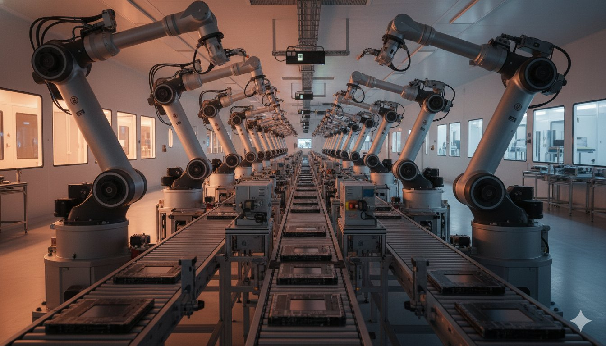

OpenAI가 GPT-5.4 Mini와 Nano를 출시하며 고속 경량 AI 모델 경쟁에 불을 지폈습니다. 테슬라는 $200억 규모의 AI 칩 자체 생산 공장 'Terafab' 프로젝트를 발표했습니다. Microsoft는 AI 제품 라인업을 대폭 정리하며 자체 AI 모델 개발에 박차를 가하고 있습니다. 한편 월스트리트에서는 AI 버블 논쟁이 본격화되고, EU는 AI 딥페이크 금지 법안을 추진하고 있습니다.
OpenAI launched GPT-5.4 Mini and Nano, igniting the lightweight AI model race. Tesla announced its $20B 'Terafab' AI chip factory project. Microsoft is reshuffling its AI product lineup while accelerating in-house model development. Meanwhile, Wall Street's AI bubble debate intensifies, and the EU is pushing forward with AI deepfake ban legislation.
OpenAI가 3월 17일 GPT-5.4 Mini와 Nano를 공식 출시했습니다. GPT-5.4 Mini는 코딩, 추론, 멀티모달 이해, 도구 사용 등 전 영역에서 GPT-5 Mini를 능가하며 2배 이상 빠른 속도를 자랑합니다. 두 모델 모두 코딩 어시스턴트, 스크린샷 해석, 실시간 텍스트-이미지 처리 등 응답 시간이 중요한 시나리오에 최적화되었습니다.
OpenAI officially launched GPT-5.4 Mini and Nano on March 17. GPT-5.4 Mini surpasses GPT-5 Mini across coding, reasoning, multimodal understanding, and tool usage while running more than twice as fast. Both models are optimized for latency-critical scenarios including coding assistants, screenshot interpretation, and real-time text-image processing.
이번 출시는 GPT-5.4 발표 불과 2일 만에 이루어졌으며, Google Gemini의 공격적 출시에 대응한 것으로 분석됩니다. AI 모델 시장이 '가장 큰 모델' 경쟁에서 '가장 빠르고 효율적인 모델' 경쟁으로 전환되고 있음을 보여줍니다. 실시간 추론 성능이 핵심 경쟁력이 되는 시대가 열리고 있습니다.
This launch came just two days after GPT-5.4, suggesting competitive pressure from Google's Gemini releases is pushing OpenAI to ship faster. The AI model market is shifting from a 'biggest model' race to a 'fastest and most efficient model' competition. Real-time inference performance is becoming the key differentiator.
핵심 요약: AI 모델 경쟁이 '크기'에서 '속도와 효율'로 전환되고 있습니다. GPT-5.4 Mini/Nano는 고성능 AI를 더 많은 애플리케이션에 낮은 비용으로 보급할 것입니다.
Key takeaway: The AI model race is shifting from 'size' to 'speed and efficiency.' GPT-5.4 Mini/Nano will bring high-performance AI to more applications at lower cost.
일론 머스크가 3월 14일 테슬라의 야심찬 Terafab 프로젝트를 예고했습니다. 이는 AI 칩의 자체 생산을 위한 수직 통합 반도체 제조 시설로, 예상 비용은 $200억, 월간 10만 웨이퍼 생산 목표입니다. 로직 처리, 메모리 생산, 첨단 패키징을 하나의 지붕 아래에서 처리하는 구조입니다.
Elon Musk announced Tesla's ambitious Terafab Project on March 14, with launch scheduled for March 21. This vertically integrated semiconductor manufacturing facility is designed for AI chip self-production, with an estimated cost of $20 billion and a target of 100,000 wafer starts per month. It combines logic processing, memory production, and advanced packaging under one roof.
이는 삼성전자와 TSMC 등 외부 칩 공급업체에 대한 의존도를 줄이려는 전략입니다. AI 칩 수요가 폭발적으로 증가하는 상황에서, 테슬라의 수직 통합 접근은 AI 반도체 공급망의 새로운 패러다임을 제시합니다. 다만 실제 양산까지는 수년이 걸릴 수 있어 단기적 영향보다는 장기 전략적 의미가 큽니다.
This strategy aims to reduce dependence on external chip suppliers like Samsung and TSMC. With AI chip demand exploding, Tesla's vertical integration approach presents a new paradigm for AI semiconductor supply chains. However, actual mass production may take years, making this more of a long-term strategic play.
핵심 요약: 테슬라의 Terafab는 AI 칩 공급망의 수직 통합이라는 새로운 패러다임을 제시합니다. AI 시대에 칩 자급자족이 기업 경쟁력의 핵심이 될 수 있습니다.
Key takeaway: Tesla's Terafab presents a new paradigm of vertical integration in AI chip supply chains. Chip self-sufficiency could become a core competitive advantage in the AI era.
Microsoft가 AI 제품 라인업에 대한 대규모 구조조정을 발표했습니다. 한때 12가지 이상의 Copilot 버전을 제공하며 고객 혼란을 야기했던 문제를 해결하기 위한 조치입니다. 동시에 자체 AI 모델 개발에 박차를 가하고 있으며, 이는 OpenAI와의 파트너십 이외에도 독자적인 AI 역량을 확보하려는 전략입니다.
Microsoft announced a major restructuring of its AI product lineup. This addresses the customer confusion caused by offering more than a dozen Copilot versions. Simultaneously, the company is accelerating in-house AI model development, signaling a strategy to build independent AI capabilities beyond the OpenAI partnership.
이번 개편은 Microsoft가 AI를 단순한 기술 데모에서 실제 수익 창출 도구로 전환하고 있음을 보여줍니다. Copilot 통합은 고객 경험을 개선하고, 자체 모델 개발은 OpenAI 의존도를 낮춤으로써 장기적으로 더 많은 수익을 확보할 수 있는 구조를 만들고 있습니다.
This restructuring shows Microsoft transitioning AI from a tech demo to an actual revenue-generating tool. Copilot consolidation improves customer experience, while in-house model development reduces OpenAI dependency, creating a structure for greater long-term profitability.
핵심 요약: Microsoft의 AI 제품 정리와 자체 모델 개발은 AI가 '기술 과시'에서 '실제 수익 도구'로 전환되는 신호입니다.
Key takeaway: Microsoft's product cleanup and in-house model development signal AI transitioning from 'tech showcase' to 'real revenue tool.'
Bloomberg이 3월 18일 "AI 버블이 터지려 하는가?"라는 제목의 기사를 발행했습니다. AI 붐 3년이 지난 시점에서 월스트리트는 AI가 '너무 파괴적이거나' '충분히 파괴적이지 않거나' 사이에서 분열되고 있습니다. 투자연구사 Citrini Research는 AI로 인한 대규모 화이트칼라 해고와 주식시장 붕괴를 상상하는 에세이를 발표해 논란을 일으켰습니다.
Bloomberg published "Is an AI Bubble Set to Burst?" on March 18. Three years into the AI boom, Wall Street is divided between AI being 'too disruptive' or 'not disruptive enough.' Investment research firm Citrini Research sparked controversy with an essay imagining mass white-collar layoffs and stock market collapse caused by AI.
실제로 AI 기술은 온라인 리서치, 프레젠테이션 제작, 동영상 편집, 코드 작성 등 실질적인 업무에 활용되며 '실용 단계'에 진입했습니다. 하지만 대규모 인프라 투자 대비 수익 회수 시기에 대한 불확실성이 버블 논쟁의 핵심입니다. Morgan Stanley는 AI 전력 부족이 9~18GW에 달할 것으로 예측하며 인프라 병목 현상도 지적했습니다.
In reality, AI technology has entered the 'practical phase,' being used for research, presentations, video editing, and coding. However, uncertainty about ROI timing for massive infrastructure investments remains the core of the bubble debate. Morgan Stanley forecasts a 9-18GW AI power shortfall, highlighting infrastructure bottlenecks.
핵심 요약: AI 버블 논쟁은 '기술의 가치'가 아닌 '투자 회수 시기'에 대한 불확실성이 핵심입니다. AI 인프라 병목 현상이 성장의 제약 요소가 될 수 있습니다.
Key takeaway: The AI bubble debate is less about technology's value and more about uncertainty in ROI timing. AI infrastructure bottlenecks could become growth constraints.
EU의 영향력 있는 의원들이 비동의 성적 이미지를 생성하는 AI 애플리케이션을 금지하는 제안을 지지했습니다. 이는 AI Act의 지속적인 협상 과정의 일환으로, AI 기술의 악용 방지에 초점을 맞추고 있습니다. 동시에 영국 정부는 AI 생성 콘텐츠의 라벨링 의무화를 검토하고 있으며, Google은 웹사이트들이 AI 검색 기능에서 콘텐츠를 제외할 수 있는 메커니즘을 개발 중입니다.
Influential EU lawmakers backed proposals to ban AI applications that generate non-consensual explicit images, as part of ongoing AI Act negotiations focused on preventing AI misuse. Meanwhile, the UK government is considering mandatory labeling of AI-generated content, and Google is developing mechanisms for websites to opt out of AI search features.
이러한 움직임은 전 세계적으로 AI 규제가 '자발적 자율 규제'에서 '법적 강제'로 전환되고 있음을 보여줍니다. 특히 딥페이크와 저작권 이슈가 AI 규제의 최우선 아젠다로 떠오르고 있습니다.
These movements show a global shift from voluntary self-regulation to legal enforcement in AI governance. Deepfakes and copyright issues are emerging as the top priorities on the AI regulation agenda.
핵심 요약: AI 규제가 '자발적'에서 '강제적'으로 전환되고 있습니다. 딥페이크와 저작권이 AI 규제의 최우선 아젠다입니다.
Key takeaway: AI regulation is shifting from 'voluntary' to 'mandatory.' Deepfakes and copyright are the top priorities on the regulatory agenda.
GPT-5.4 Mini/Nano 출시는 AI 모델 경쟁이 '크기'에서 '속도와 효율'로 전환되고 있음을 보여줍니다. 더 많은 애플리케이션에 낮은 비용으로 AI가 보급될 것입니다.
GPT-5.4 Mini/Nano shows the AI model race shifting from 'size' to 'speed and efficiency.' AI will spread to more applications at lower costs.
테슬라의 $200억 Terafab는 AI 칩 공급망의 수직 통합이라는 새로운 트렌드를 제시합니다. AI 시대에 칩 자급자족이 기업 경쟁력의 핵심 요소가 될 수 있습니다.
Tesla's $20B Terafab presents a new trend of vertical integration in AI chip supply. Chip self-sufficiency could become a core competitive factor in the AI era.
Microsoft의 Copilot 정리와 자체 모델 개발은 AI가 '기술 과시'에서 '실제 수익 도구'로 전환되고 있음을 보여줍니다. 버블 논쟁 속에서도 AI의 실용성은 점점 입증되고 있습니다.
Microsoft's Copilot cleanup and in-house model development show AI transitioning from 'tech showcase' to 'real revenue tool.' Even amid bubble debates, AI's practical utility is being increasingly proven.
EU의 딥페이크 금지 법안과 영국의 AI 콘텐츠 라벨링 의무화 검토는 AI 규제가 '자발적'에서 '강제적'으로 전환되는 신호입니다. AI 기업들의 컴플라이언스 부담이 증가할 것입니다.
The EU's deepfake ban proposal and UK's AI content labeling review signal AI regulation shifting from voluntary to mandatory. Compliance burdens on AI companies will increase.